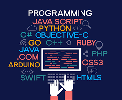

Pemrograman
Bahasa program adalah sekumpulan instruksi yang diberikan kepada komputer untuk dapat melaksanakan tugas-tugas tertentu dalam menyelesaikan suatu permasalahan. Bahasa program berfungsi untuk memerintah komputer agar dapat mengolah data sesuai dengan langkah-langkah penyelesaian yang telah ditentukan oleh programmer. Bahasa ini memungkinkan seorang programmer untuk menentukan secara persis data mana yang akan diolah oleh komputer, bagaimana data ini akan disimpan/diteruskan, dan jenis langkah apa yang akan diambil dalam berbagai situasi secara persis.
Fungsi utama dari bahasa pemrograman adalah sebagai alat untuk memberikan perintah kepada komputer agar dapat bergerak mengolah kata sesuai dengan apa yang kamu inginkan. Hasil keluaran bahasa program sendiri dapat berupa aplikasi maupun suatu program khusus. Perkembangan bahasa program ini tentu menciptakan berbagai inovasi teknologi yang membantu masyarakat dalam kehidupan sehari-hari. Contohnya program lampu lalu lintas di jalan, mesin kasir, aplikasi game, anti-virus, web, media sosial, dan lain sebagainya.